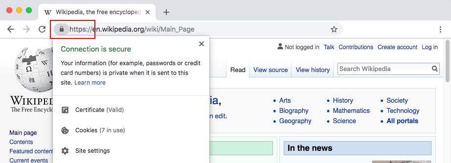
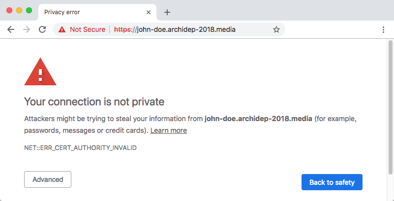
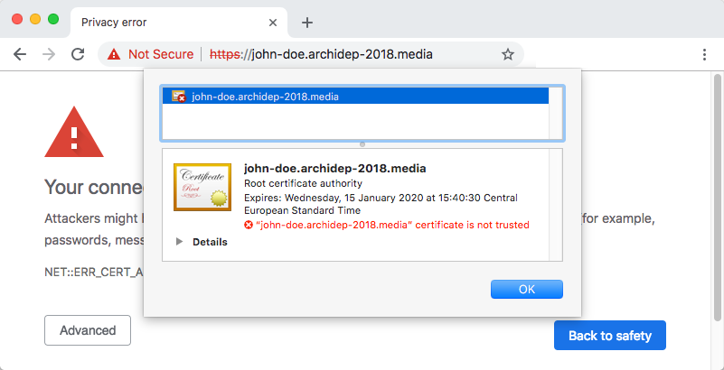
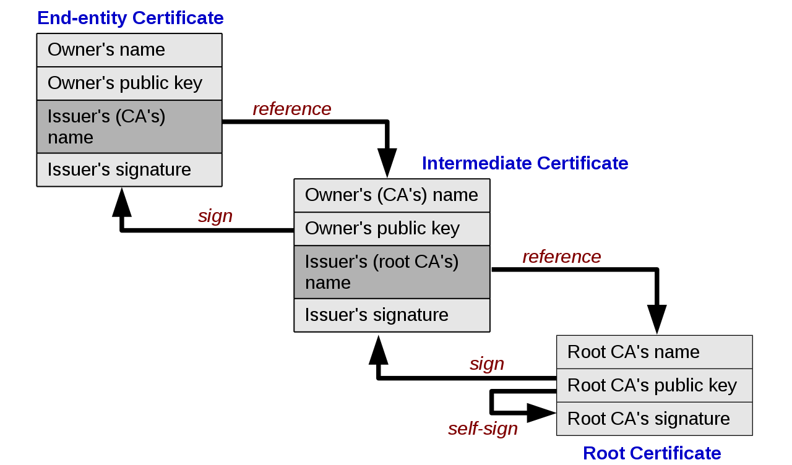
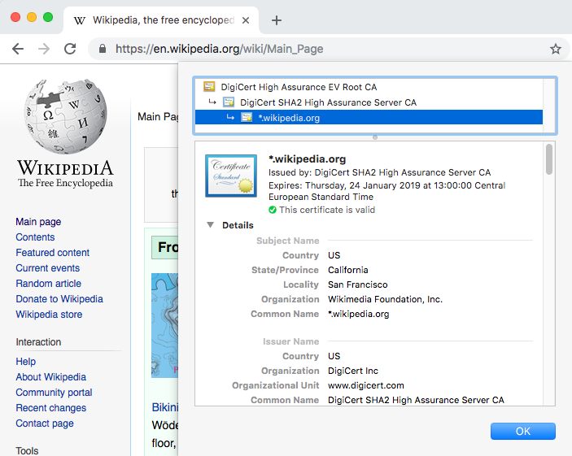
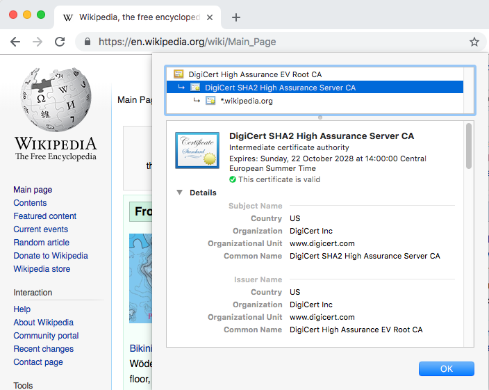
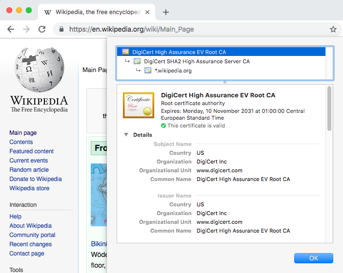

# TLS/SSL Certificates Architecture & Deployment <!-- .element: class="subtitle" --> **Notes:** Learn about SSL certificates, how to create your own and how to request some from [Let's Encrypt](https://letsencrypt.org/). --- ## What is a TLS or SSL certificate? <!-- slide-front-matter class: center, middle --> --- ## Public key certificates A [**public key certificate**](https://en.wikipedia.org/wiki/Public_key_certificate) is an electronic document that proves the ownership of a public key using [public key cryptography](https://en.wikipedia.org/wiki/Public-key_cryptography). --- ## TLS certificate A [**TLS (formerly SSL) certificate**](https://en.wikipedia.org/wiki/Public_key_certificate#TLS/SSL_server_certificate) is a type of public key certificate that allows a computer such as a **web server** to prove that it owns a public key. Its validity is linked to one or multiple **domain names**. <ul class="text-3xl"> <li><code>google.com</code></li> <li><code>download.microsoft.com</code> & <code>www.microsoft.com</code></li> <li><code>*.example.com</code> (wildcard)</li> </ul> **Notes:** SSL is the original **S**ecure **S**ockets **L**ayer protocol first published in 1995 and which is now deprecated. TLS is the newer and more secure [**T**ransport **L**ayer **S**ecurity](https://en.wikipedia.org/wiki/Transport_Layer_Security) protocol first published in 1999, its latest version being TLS 1.3 published in 2018 (at the time of writing). Although TLS is used today, TLS certificates are sometimes still called "SSL certificates". A TLS certificate can be linked to one or multiple domain names. It can also be a wildcard certificate valid for all subdomains of a given domain. --- ### What is a TLS certificate good for? A TLS certificate is one of the components that allows a server to **communicate securely over HTTPS** using the TLS protocol. <p></p> **Notes:** - The client and server agree on a [cipher suite](https://en.wikipedia.org/wiki/Cipher_suite) (cipher and hash functions) they both support. - The server provides its TLS certificate and the client confirms its validity. - A symmetric encryption key is exchanged using the asymmetric [Diffie-Hellman key exchange](https://en.wikipedia.org/wiki/Diffie%E2%80%93Hellman_key_exchange). - The client and server can now communicate securely by using symmetric encryption to encrypt all traffic. --- ## Validity of TLS certificates Your browser will not simply accept any TLS certificate. You can generate your own TLS certificate to test this. --v ### Generating a TLS certificate ```bash $> mkdir ~/certificate $> cd ~/certificate $> openssl req -newkey rsa:2048 -nodes -keyout key.pem \ -x509 -days 365 -out certificate.pem Generating a 2048 bit RSA private key ... Country Name (2 letter code) [AU]:CH State or Province Name (full name) [Some-State]:Vaud Locality Name (eg, city) []:Yverdon Organization Name (eg, company) [...]:HEIG-VD Organizational Unit Name (eg, section) []: Common Name (e.g. server FQDN or YOUR name) []:jde.archidep.ch Email Address []:john.doe@heig-vd.ch ``` --v ### What's in a TLS certificate? ```bash $> ls certificate.pem key.pem $> cat certificate/certificate.pem -----BEGIN CERTIFICATE----- MIID7jCCAtagAwIBAgIJAPPUhT7FLeLRMA0GCSqGSIb3DQEBCwUAMIGLMQswCQYD VQQGEwJDSDENMAsGA1UECAwEVmF1ZDEQMA4GA1UEBwwHWXZlcmRvbjEQMA4GA1UE ... ``` **Notes:** The previous command generated two files: - A **TLS certificate** in the `certificate.pem` file. - A **private key** in the `key.pem` file. The `certificate.pem` file is simply a Base64-encoded plain text file. --v ### Decode a TLS certificate ```bash $> openssl x509 -text -noout -in certificate.pem Certificate: Data: Version: 3 (0x2) Serial Number: ef:ea:3a:93:c5:74:a8:e7 Signature Algorithm: sha256WithRSAEncryption Issuer: C = CH, ST = Vaud, L = Yverdon, O = HEIG-VD, CN = jde.archidep.ch, emailAddress = jde@heig-vd.ch Validity Not Before: Jan 15 14:28:11 2019 GMT Not After : Jan 15 14:28:11 2020 GMT ... ``` **Notes:** A TLS certificate is not encrypted. You can decode its contents with the following command. --v ### Configure nginx to use a TLS certificate ```nginx server { listen 80; listen 443 ssl; ssl_certificate /home/jde/certificate/certificate.pem; ssl_certificate_key /home/jde/certificate/key.pem; ssl_protocols TLSv1.2 TLSv1.3; ssl_ciphers HIGH:!aNULL:!MD5; server_name jde.archidep.ch; root /home/jde/my-website; index index.html; } ``` See Mozilla's [SSL Configuration Generator](https://ssl-config.mozilla.org). **Notes:** Assuming you already have a website deployed with nginx, add the following lines to its configuration file. Reload nginx's configuration with `sudo nginx -s reload`. - The `listen 443 ssl` directive instructs nginx to also listen on port 443 (HTTPS) for this site. - The [`ssl_certificate`](http://nginx.org/en/docs/http/ngx_http_ssl_module.html#ssl_certificate) directive makes it serve the specified TLS certificate file to clients. - The [`ssl_certificate_key`](http://nginx.org/en/docs/http/ngx_http_ssl_module.html#ssl_certificate_key) directive makes it use the private key in the specified file to perform the asymmetric cryptography in the TLS protocol. --v ### Invalid certificate authority <p></p> **Notes:** If you access your website with this configuration, Chrome indicates that there is an error of type `NET::ERR_CERT_AUTHORITY_INVALID`. This means that there is no valid **certificate authority** that guarantees that this certificate is valid. --v ### Self-signed root certificate This **self-signed root certificate** is invalid. <p></p> **Notes:** The certificate details indicates that it is a **root certificate**, meaning that no other certificate authority guarantees its validity. Since you signed it yourself (by running the earlier `openssl req` command), and you are not a valid certificate authority, it is considered invalid by your browser. --- ## How to make a certificate valid To be valid, a TLS certificate must be **signed by a valid certificate authority**. This signature is a [digital signature](https://en.wikipedia.org/wiki/Digital_signature) using [public key cryptography](https://en.wikipedia.org/wiki/Public-key_cryptography). **Notes:** - The certificate authority has a **private and public key pair**. - They will **use their private key to create a signature** of your certificate. - They will **distribute their public key** so that anyone in possession of your certificate and their public key can **verify the signature**. --- ## How do I know the certificate authority is valid? The certificate authority that signed your certificate must itself prove that it owns the public key that is being distributed by providing a **public key certificate of its own**. --- ## Chain of trust <p></p> **Notes:** Your TLS certificate and various other public key certificates are thus linked together in a **chain of trust**. Each certificate, starting with your own **end-user certificate** (or end-entity certificate) is signed by the next certificate authority, proving its validity to the client. This is a type of [public key infrastructure](https://en.wikipedia.org/wiki/Public_key_infrastructure). --- ### Viewing a certificate's chain of trust <p></p> **Notes:** Browsers allow you to view a TLS certificate's chain of trust. --- ### Intermediate certificates <p></p> **Notes:** In this example, there are 3 certificates in the chain, but there could be more. All certificates in the middle are **intermediate certificate authorities**. --- ### Root certificate authorities <p></p> **Notes:** The **root certificate authority** is the one at the top of the chain. --- ## Root certificate validity How then does the browser know that a root certificate authority is valid? **Notes:** As you can see in the chain of trust diagram, the **root certificate** is self-signed: there is no inherent difference between it and a certificate you have generated yourself with `openssl req`. --- ### Trusted CA Certificate Lists Browsers and operating systems have **hardcoded lists of root certificates** that are considered to be **trusted**. - [Trusted Root Certificates in iOS](https://support.apple.com/en-gb/HT204132) - [Trusted Root Certificates in Mozilla Firefox](https://wiki.mozilla.org/CA/Included_Certificates) **Notes:** When your browser checks a TLS's certificate chain of trust, it expects the chain's root certificate to be one of the **already trusted** ones; otherwise, the TLS certificate is deemed invalid. --- ### Becoming a trusted CA To launch a new company to issue valid TLS certificates, browser/computer vendors must include your new root certificate in their programs: - [Apple Root Program](https://www.apple.com/certificateauthority/ca_program.html) - [Microsoft Root Program](https://docs.microsoft.com/en-us/previous-versions//cc751157(v=technet.10)) - [Mozilla Root Program](https://www.mozilla.org/en-US/about/governance/policies/security-group/certs/policy/) - [Oracle Root Program](https://www.oracle.com/technetwork/java/javase/javasecarootcertsprogram-1876540.html) --- ## Obtaining a TLS certificate To obtain a valid TLS certificate, you need to request one from a [**certification authority (CA)**](https://en.wikipedia.org/wiki/Certificate_authority): - [IdenTrust](https://www.identrust.com) - [Comodo](https://www.comodo.com) - [DigiCert](https://www.digicert.com) --- ### Domain validation You must **prove that you are the legitimate owner of the domain** before a CA will issue you a valid TLS certificate. There are various techniques to do this. --v ### HTTP validation The CA can ask you to put a file at `http://example.com/abc.txt` containing a random validation token. Doing this **proves that you control the server** which serves the content for the domain. --v ### DNS validation The CA can ask you to create a custom DNS record for your domain. Doing this **proves that you control the DNS zone file** for the domain. --v ### Email validation The CA can send you a mail with a validation link at `admin@example.com`. Following the link **proves that you are the administrator of the domain**, since only you could manage that email address. --- ### Purchasing TLS certificates Some certificate authorities sell you TLS certificates. --v ### Paying for compatibility Not all root certificates are as widespread. Some may be present in more browsers and operating systems. By paying more, you may get a certificate that is certified to be **compatible with more clients**. --v ### Paying for warranty Many certificate authorities will pay you a given sum of money if your security is compromised because of a weakness in their TLS certificate. You may increase that warranty by purchasing a more expensive certificate. --v ### Paying for extended validation **[Extended Validation Certificate (EV)](https://en.wikipedia.org/wiki/Extended_Validation_Certificate):** Certificate authorities can validate that a legal entity is the owner of a domain, enabling the browser to display a so-called "green-bar certificate".  --- ## Let's Encrypt [Let's Encrypt](https://letsencrypt.org/) is a **certificate authority (CA)** run for the public's benefit by the [Internet Security Research Group (ISRG)](https://letsencrypt.org/isrg/): - **Free**, **Automatic**, **Secure** - **Transparent**, **Open**, **Cooperative** **Notes:** - **Free:** Anyone who owns a domain name can use Let's Encrypt to obtain a valid TLS certificate at zero cost. - **Automatic:** Software running on a web server can painlessly obtain a certificate, securely configure it for use, and automatically take care of renewal. - **Secure:** Let's Encrypt will serve as a platform for advancing TLS security best practices, both on the CA side and by helping site operators properly secure their servers. - **Transparent:** All certificates issued or revoked will be publicly recorded and available for anyone to inspect. - **Open:** The automatic issuance and renewal protocol will be published as an open standard that others can adopt. - **Cooperative:** Much like the underlying Internet protocols themselves, Let's Encrypt is a joint effort to benefit the community, beyond the control of any one organization. --- ### Certbot [Certbot](https://certbot.eff.org/) is a tool made by the [Electronic Frontier Foundation (EFF)](https://www.eff.org): - Helps you **obtain Let's Encrypt certificates** - **Configures your web server** ([Apache](https://www.apache.org), [nginx](http://nginx.org/)) - Sets up **automatic renewal** --- ## References - [Public-key Certificate](https://en.wikipedia.org/wiki/Public_key_certificate) - [Public Key Cryptography](https://en.wikipedia.org/wiki/Public-key_cryptography) - [Chain of Trust](https://en.wikipedia.org/wiki/Chain_of_trust) - [Certificate Authority (CA)](https://en.wikipedia.org/wiki/Certificate_authority) - [Let's Encrypt](https://letsencrypt.org/) - [Generating a self-signed certificate using OpenSSL](https://www.ibm.com/support/knowledgecenter/SSMNED_5.0.0/com.ibm.apic.cmc.doc/task_apionprem_gernerate_self_signed_openSSL.html) - [Nginx - Configuring HTTPS servers](http://nginx.org/en/docs/http/configuring_https_servers.html) [apache]: https://www.apache.org [apple-root-ca]: https://www.apple.com/certificateauthority/ca_program.html [ca]: https://en.wikipedia.org/wiki/Certificate_authority [certbot]: https://certbot.eff.org/ [chain-of-trust]: https://en.wikipedia.org/wiki/Chain_of_trust [cipher-suite]: https://en.wikipedia.org/wiki/Cipher_suite [comodo]: https://www.comodo.com [dh]: https://en.wikipedia.org/wiki/Diffie%E2%80%93Hellman_key_exchange [digicert]: https://www.digicert.com [digital-signature]: https://en.wikipedia.org/wiki/Digital_signature [eff]: https://www.eff.org [ev-certificate]: https://en.wikipedia.org/wiki/Extended_Validation_Certificate [identrust]: https://www.identrust.com [ios-root-ca-list]: https://support.apple.com/en-gb/HT204132 [isrg]: https://letsencrypt.org/isrg/ [letsencrypt]: https://letsencrypt.org/ [microsoft-root-ca]: https://docs.microsoft.com/en-us/previous-versions//cc751157(v=technet.10) [mozilla-root-ca]: https://www.mozilla.org/en-US/about/governance/policies/security-group/certs/policy/ [mozilla-root-ca-list]: https://wiki.mozilla.org/CA/Included_Certificates [mozilla-ssl-config]: https://ssl-config.mozilla.org [nginx]: http://nginx.org/ [nginx-ssl]: http://nginx.org/en/docs/http/configuring_https_servers.html [nginx-ssl-certificate-directive]: http://nginx.org/en/docs/http/ngx_http_ssl_module.html#ssl_certificate [nginx-ssl-certificate-key-directive]: http://nginx.org/en/docs/http/ngx_http_ssl_module.html#ssl_certificate_key [oracle-root-ca]: https://www.oracle.com/technetwork/java/javase/javasecarootcertsprogram-1876540.html [pki]: https://en.wikipedia.org/wiki/Public_key_infrastructure [pubkey]: https://en.wikipedia.org/wiki/Public-key_cryptography [pubkey-certificate]: https://en.wikipedia.org/wiki/Public_key_certificate [self-signed]: https://www.ibm.com/support/knowledgecenter/SSMNED_5.0.0/com.ibm.apic.cmc.doc/task_apionprem_gernerate_self_signed_openSSL.html [tls]: https://en.wikipedia.org/wiki/Transport_Layer_Security [tls-certificate]: https://en.wikipedia.org/wiki/Public_key_certificate#TLS/SSL_server_certificate [tls-procedure]: https://en.wikipedia.org/wiki/Transport_Layer_Security#Description
GitHub
Backup copy